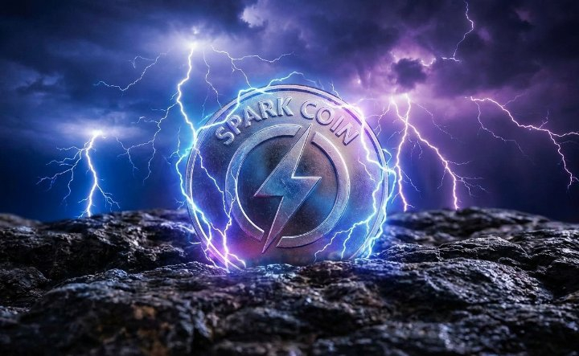

Native token of the Spark DeFi ecosystem — decentralized finance for liquidity, staking, and governance.
View on DEX View ContractSPARK COIN (SPK) is the native token of the Spark DeFi ecosystem. It manages stablecoin liquidity, offers yields, governance participation, and staking opportunities.
SPK is used for governance votes, earning rewards, and securing the protocol through staking. Designed to help users earn yields and participate in DeFi services.
Network: GoldxMainnet
Status: Live & Tradable
Total Supply: 1,000,000,000 SPK
✔ Token Launch on GoldxMainnet
✔ DEX Listing
🔜 Staking Platform
🔜 Mobile App Development
Follow SPARK COIN on Twitter